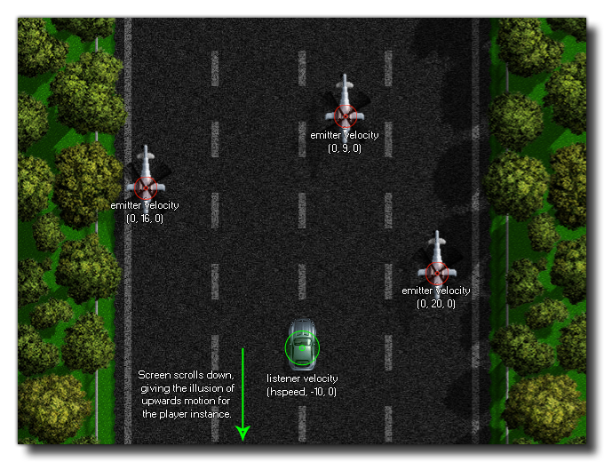

Diese Funktion kann verwendet werden, um dem gegebenen Zuhörer Dopplereffekte zu geben und die Audiobewegung basierend auf dem Vektor zu simulieren, der aus den gegebenen relativen x-, y- und z-Positionen aufgelöst wird. Der Standardlistenerindex ist 0, Sie können die Funktion jedoch verwenden audio_get_listener_info um die verschiedenen Indizes für die Zielplattform verfügbar zu machen.
Wenn der gegebene Listener sich niemals bewegt oder die Bewegung keine konstante Bewegung ist, müssten Sie diese Werte normalerweise nicht einstellen, sondern zum Beispiel, wenn Sie ein Scroll-Spiel machen, bei dem der Spieler einen konstanten Grund hat obere Bewegung und die Feinde eine konstante Bewegung von oben nach unten, würden Sie die Hörer- und Emittergeschwindigkeiten einstellen (für Emitter, die Sie verwenden würden) audio_emitter_velocity ) an die entsprechenden Vektoren, um den korrekten Doppler-Effekt zu simulieren, wenn sie sich an der Spielerinstanz vorbeibewegen.
Das Bild unten zeigt, wie dies für das oben genannte Beispielspiel eingerichtet werden könnte: 
audio_listener_set_velocity(index, x, y, z);
| Streit | Beschreibung |
|---|---|
| index | Der Listener, für den die Daten abgerufen werden sollen (Standard 0). |
| x | Die x Geschwindigkeit des Listeners (Standard 0). |
| y | Die y-Geschwindigkeit des Listeners (Standard 0). |
| z | Die Z-Geschwindigkeit des Listeners (Standard 0). |
N/A
var num = audio_get_listener_count();
for(var i = 0; i < num; ++i;)
{
var info = audio_get_listener_info(i);
var data = audio_listener_get_data(info[?
"index"]);
if data[? "vx"] != 0
{
audio_listener_set_velocity(info[?
"index"], 0, 0, 0);
}
ds_map_destroy(info);
ds_map_destroy(data);
}
Der obige Code prüft die Anzahl der verfügbaren Listener, durchläuft sie dann, und wenn ihre x-Geschwindigkeit nicht 0 ist, setzt sie ihre Geschwindigkeitswerte auf 0, 0, 0.